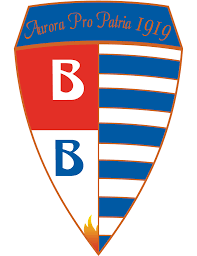

Pro Patria

L'Aurora Pro Patria 1919 S.r.l., meglio nota come Pro Patria, è una società calcistica italiana con sede nella città di Busto Arsizio, in provincia di Varese. Milita in Serie C, la terza divisione del campionato italiano.
Costituita il 3 giugno 2009 da Antonio e Savino Tesoro in continuità con la fallita Pro Patria Gallaratese G.B. S.r.l., le è subentrata ufficialmente il 26 giugno successivo con l'affiliazione alla FIGC. In tal modo ha ereditato la tradizione sportiva iniziata nel 1919 con la fondazione della "capostipite" Pro Patria et Libertate.
Tra i club calcistici della provincia di Varese, la Pro Patria vanta il maggior numero di presenze nella massima divisione nazionale (14 totali, comprese le due annate immediatamente antecedenti la riforma che ha dato il via alla Serie A a girone unico, nel 1929-1930), nella quale ha militato per l'ultima volta nel 1955-1956. Ha inoltre al suo attivo 19 stagioni complessive in seconda serie, l'ultima delle quali nel 1965-1966. Nel suo palmarès annovera infine la vittoria dello Scudetto Serie D per l'annata 2017-2018.